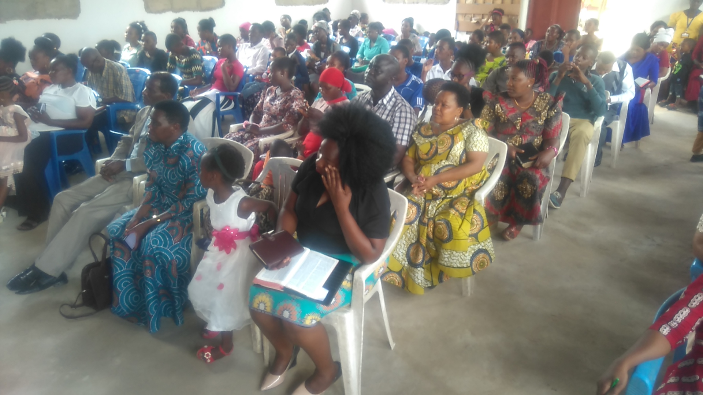
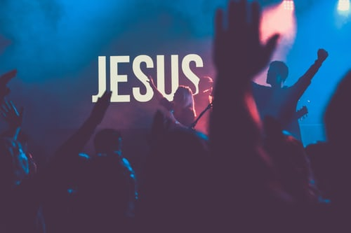
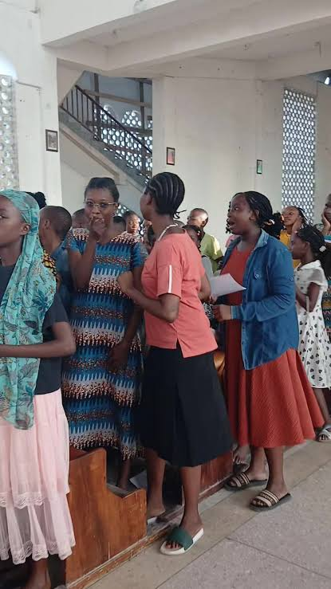
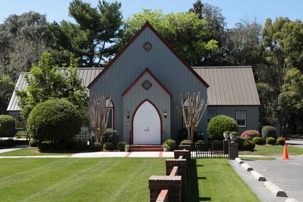

Angalia baadhi ya matukio yaliyofanyika kanisani — bofya picha kuiona kwa ukubwa zaidi.

MafundishoWashirika katika kusikiliza mafundisho ya Neno la Mungu.

KusifuTamasha la kusifu na kuabudu.
Kutangazwa kwa uchumba kati ya kaka Filbert na dada Happy.

KwayaVijana wakiwa katika mazoezi ya kwaya.

UshirikaFamilia ya JTP ikiwa pamoja katika ushirika.
Ibada kuu ikiendelea kanisani.